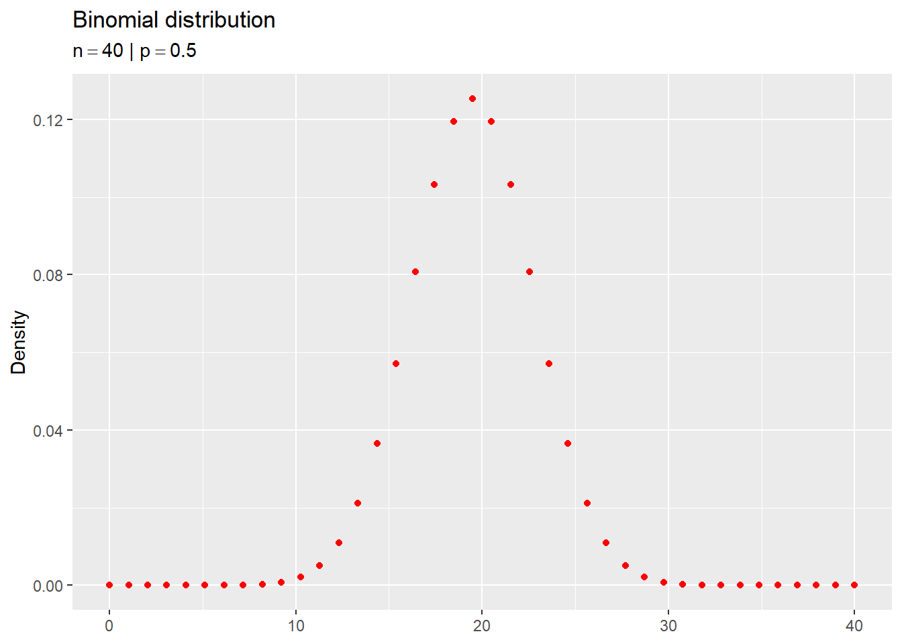
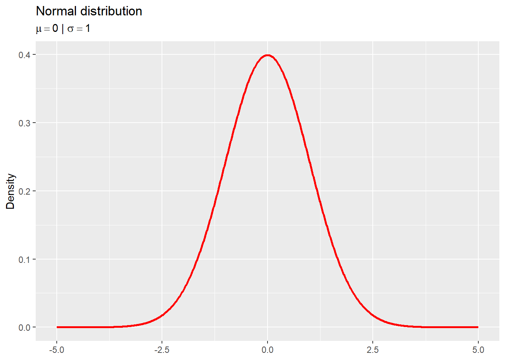
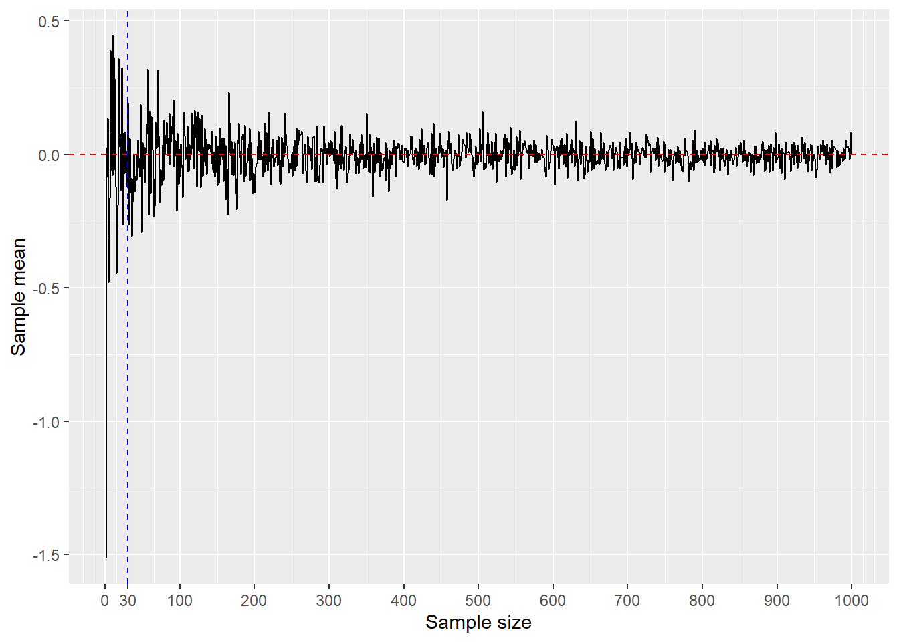
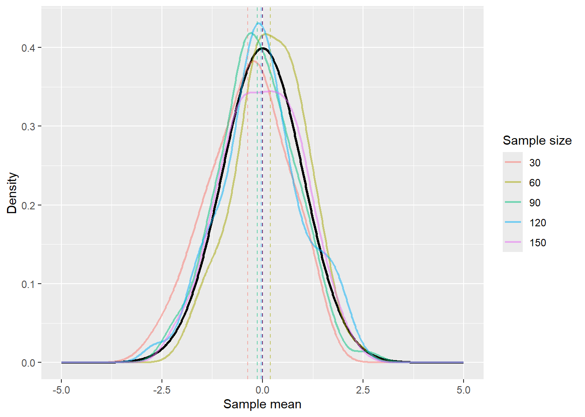

Please note that this is just an exercise and some documentation may be missing.
Two theorems regarding large random samples: LLN & CLT
To get a grasp of the Central Limit Theorem (CLT), it’s important to also understand the Law of Large numbers (LLN). Combined, they allow us to make inferences regardless of the original distribution of the population.
The LLN is maybe the easier of the two to understand. It states that the sample mean will converge to the population mean as the sample size increases.
Here is the theorem regarding the LLN, as described in DeGroot & Schervish (2012, p. 352).
Theorem 1 (Law of Large Numbers) Suppose that \(X_{1}, \dots, X_{n}\) form a random sample from a distribution for which the mean is \(\mu\) and for which the variance is finite. Let \(\overline{X}_{n}\) denote the sample mean. Then:
\[
\overline{X}_{n} \xrightarrow{p} \mu
\tag{1}\]
The term “central limit theorem” was likely coined by Georg Pólya in 1920 (Pólya, 1920), referring to a fundamental concept in probability theory. This theorem, initially discovered by Laplace in 1810, explains the frequent appearance of the Gaussian probability density (\(e^{-x^{2}}\)) in various situations. Today, the term encompasses a wide range of statements concerning the convergence of probability distributions to a normal distribution, applicable to functions of various random variables or elements (Fischer, 2011).
Here is the main theorem regarding the CLT, as described by DeGroot & Schervish (2012, p. 361).
Theorem 2 (Central Limit Theorem (Lindeberg and Lévy)) If the random variables \(X_{1}, \dots, X_{n}\) form a random sample of size \(n\) from a given distribution with mean \(\mu\) and variance \(\sigma^{2}\) (\(0 < \sigma^{2} < \infty\)), then for each fixed number \(x\),
where \(\Phi\) denotes the cumulative distribution function (c.d.f.) of the standard normal distribution.
The interpretation of Equation 2 is as follows: If a large random sample is taken from any distribution with mean \(\mu\) and variance \(\sigma^{2}\), regardless of whether this distribution is discrete or continuous, then the distribution of the random variable \(n^{1/2}(\overline{X}_n - \mu) / \sigma\) will be approximately the standard normal distribution. Therefore, the distribution of \(\overline{X}_{n}\) will be approximately the normal distribution with mean \(\mu\) and variance \(\sigma^{2}/n\), or, equivalently, the distribution of the sum \(\sum^{n}_{i = 1} X_{i}\) will be approximately the normal distribution with mean \(n \mu\) and variance \(n \sigma^{2}\). (DeGroot & Schervish, 2012, pp. 361–362)
In the next sections, you will see these theorems in action.
Simulating the Central Limit Theorem (CLT)
Let’s first run some code to set up the environment.
n_args<-function(fun){checkmate::assert_function(fun)as.list(args(fun))%>%`[`(-length(.))|>names()|>length()}args_names<-function(fun){checkmate::assert_function(fun)as.list(args(fun))%>%`[`(-length(.))|>names()}assert_function<-function(fun, ...){checkmate::assert_function(fun)args<-list(...)n_args<-n_args(fun)if(n_args==0){cli::cli_abort(paste0("{.strong {cli::col_red('fun')}} must have at least one parameter."))}unassigned_parameters<-formals(fun)%>%# Don't change the pipe`[`(-1)|>purrr::map(~ifelse(inherits(.x, "name"), TRUE, FALSE))|>purrr::keep(~isTRUE(.x))|>names()if(any(!unassigned_parameters%in%names(args), na.rm =TRUE)){unassigned_minus_arg<-unassigned_parameters%>%`[`(!unassigned_parameters%in%names(args))cli::cli_abort(paste0("{.strong {cli::col_blue('fun')}} ","{cli::qty(length(unassigned_minus_arg))} parameter{?s} ","{.strong {unassigned_minus_arg}} must be assigned in ","{.strong {cli::col_red('...')}} (ellipsis)."))}invisible(NULL)}
Code
plot_dist<-function(fun=stats::dnorm,...,n=1000,geom="function",x_lim=c(-5, 5),y_lim=NULL,title=NULL,subtitle=NULL){assert_function(fun, ...)checkmate::assert_integerish(n, lower =1)checkmate::assert_string(geom)checkmate::assert_numeric(x_lim, len =2)checkmate::assert_numeric(y_lim, len =2, null.ok =TRUE)checkmate::assert_multi_class(title, c("character", "latexexpression"), null.ok =TRUE)checkmate::assert_multi_class(subtitle, c("character", "latexexpression"), null.ok =TRUE)if(is.character(title))checkmate::assert_string(title, null.ok =TRUE)if(is.character(subtitle))checkmate::assert_string(subtitle, null.ok =TRUE)args<-list(...)plot<-ggplot2::ggplot()+ggplot2::stat_function( fun =fun, args =args, n =n, geom =geom, colour ="red", linewidth =1)+ggplot2::xlim(x_lim[1], x_lim[2])+ggplot2::labs(y ="Density")if(!is.null(y_lim))plot<-plot+ggplot2::ylim(y_lim[1], y_lim[2])if(!is.null(title))plot<-plot+ggplot2::labs(title =title)if(!is.null(subtitle))plot<-plot+ggplot2::labs(subtitle =subtitle)print(plot)invisible(plot)}
Code
clt_data<-function(fun=stats::runif,...,sample_size=10, # Number of observationssample_n_max=150, # Maximum Number of samplesdist_name=NULL){assert_function(fun, ...)checkmate::assert_number(sample_size, lower =1)checkmate::assert_number(sample_n_max, lower =1)checkmate::assert_string(dist_name, null.ok =TRUE)args<-list(...)if(length(args)==0||!args_names(fun)[1]%in%names(args)){args[args_names(fun)[1]]<-sample_size}distribution<-ifelse(is.null(dist_name),deparse(substitute(fun)),dist_name)data<-purrr::map(seq(1, sample_n_max),~dplyr::tibble( distribution =distribution, sample_size =sample_size, sample_number =.x, sample_mean =do.call(fun, args =args)|>mean()))|>purrr::reduce(dplyr::add_row)purrr::map(seq(1, sample_n_max),~data|>dplyr::slice(seq_len(.x))|>dplyr::mutate(group =.x))|>purrr::reduce(dplyr::add_row)|>dplyr::mutate(group =as.factor(group))}plot_clt<-function(fun=stats::runif,...,sample_size=10, # Number of observationssample_n_max=150, # Maximum Number of samplestitle="Central Limit Theorem",dist_name=NULL){assert_function(fun, ...)checkmate::assert_number(sample_size, lower =1)checkmate::assert_number(sample_n_max, lower =1)checkmate::assert_string(title, null.ok =TRUE)checkmate::assert_multi_class(title, c("character", "latexexpression"), null.ok =TRUE)checkmate::assert_string(dist_name, null.ok =TRUE)data<-clt_data( fun =fun,..., sample_size =sample_size, sample_n_max =sample_n_max, dist_name =dist_name)y_plot<-data|>dplyr::filter(group==sample_n_max)%>%{ggplot2::ggplot(., ggplot2::aes(x =sample_mean))+ggplot2::stat_function( fun =stats::dnorm, args =list( mean =.$sample_mean|>mean(), sd =.$sample_mean|>stats::sd()))}y_lim<-(ggplot2::layer_scales(y_plot)$y$range$range[2])%>%`*`(3/2)%>%c(0, .)plot<-data%>%{ggplot2::ggplot(., ggplot2::aes(x =sample_mean))+ggplot2::geom_histogram(ggplot2::aes(y =ggplot2::after_stat(density)), colour ="black", fill ="white", bins =30)+ggplot2::stat_function( fun =stats::dnorm, args =list( mean =.$sample_mean|>mean(), sd =.$sample_mean|>stats::sd()), n =1000, colour ="red", linewidth =1, xlim =c(mean(.$sample_mean)-(5*stats::sd(.$sample_mean)),mean(.$sample_mean)+(5*stats::sd(.$sample_mean))))+ggplot2::ylim(y_lim)+ggplot2::labs(x ="Sample mean", y ="Density")+ggplot2::theme(text =ggplot2::element_text(size =12.5))}if(!is.null(title))plot<-plot+ggplot2::labs(title =title)anim<-plot+gganimate::transition_states(group)+gganimate::ease_aes("exponential-out")+ggplot2::labs(subtitle =paste0(ifelse(!is.null(dist_name),dist_name,deparse(substitute(fun))), " | ","Sample size = ", sample_size, " | ","Sample number = {closest_state}"))anim|>gganimate::animate( renderer =gganimate::gifski_renderer(), ref_frame =-1)|>suppressWarnings()}
Now, let’s set the parameters of the simulation.
Code
sample_size<-30# Number of observations for each samplesample_n_max<-300# Maximum number of samples
In the next sections, we will draw samples from different distributions and see how the Central Limit Theorem works.
plot_dist( fun =stats::dbinom, x =seq(1, n, by =1), size =n, prob =0.5, n =n, geom ="point", x_lim =c(0, n), title =dist_name, subtitle =latex2exp::TeX(paste0("$n = ", n, "$ | $p = 0.5$")))|>rutils:::shush()

Code
plot_clt( fun =stats::rbinom, size =100, # Number of trials prob =0.5, # Probability of success on each trial sample_size =sample_size, # Number of observations sample_n_max =sample_n_max, dist_name =dist_name)
Here is a tricky one for the Central Limit Theorem.
The Cauchy distribution violates one of the conditions of the CLT, which is that the population must have a finite variance (\(0 < \sigma^{2} < \infty\)). This distribution has an infinite variance.
Let’s see what happens when we draw samples from it.
As expected, the sample means are not normally distributed. This is because the Cauchy distribution has an infinite variance, which violates one of the conditions of the Central Limit Theorem.
Making sense of the Central Limit Theorem with the Law of Large Numbers
The Central Limit Theorem (CLT) states that the distribution of the sample means will be approximately normal, regardless of the original distribution of the population* (*with a few restrictions). This means that if you take multiple samples from a population and calculate their means, the distribution of those means will tend to be normal.
The Law of Large Numbers (LLN) complements the CLT by stating that as the sample size increases, the sample mean will converge to the population mean. In other words, the more observations you have, the more likely it is that your sample mean will accurately reflect the true population mean. This is because the probability to get an extreme value decreases as the sample size increases.
Let’s do a test to see if this holds true. We will draw samples from a normal distribution and calculate the sample mean. We will do this 100 times for a given sample size and then calculate the mean of the sample means to get a representative mean for the sample size.
Code
plot_dist( fun =stats::dnorm, mean =0, sd =1, title ="Normal distribution", subtitle =latex2exp::TeX("$\\mu = 0$ | $\\sigma = 1$"))

Code
mean_test<-function(sample_size, iterations=100){purrr::map(seq_len(iterations),~rnorm(sample_size, mean =0, sd =1)|>mean())|>purrr::reduce(mean)}
Code
x_max<-1000data<-dplyr::tibble( x =seq(1, x_max, by =1), y =purrr::map_dbl(x, mean_test)|>unlist())
Let’s now plot the sample mean as a function of the sample size.
Code
data|>ggplot2::ggplot(ggplot2::aes(x =x, y =y))+ggplot2::geom_line()+ggplot2::geom_hline(yintercept =0, linetype ="dashed", color ="red")+ggplot2::geom_vline(xintercept =30, linetype ="dashed", color ="blue")+ggplot2::scale_x_continuous(breaks =sort(c(30, seq(0, x_max, by =100))))+ggplot2::labs(x ="Sample size", y ="Sample mean")

As you can see, the sample mean is close to the population mean (red dashed line) with a sample size of around 30 (blue dashed line). 30 is just a rule of thumb, like a minimum size to the CLT to kick in, but it’s important to always do a power analysis when estimating sample sizes (see one here!). The sample mean will be even closer to the population mean as the sample size increases.
Considering that the sample mean comes from a normal distribution (as seen in the CLT), and that, as we have more and more observations, the sample mean will converge to the population mean (as seen in the LLN), we can say that the sample mean can be an unbiased estimator of the population mean.
Unconvinced? Let’s try this from another angle.
Code
gg_color_hue<-function(n){hues=seq(15, 375, length =n+1)hcl(h =hues, l =65, c =100)[seq(1, n)]}pull_mean<-function(data, s_size){data|>dplyr::filter(sample_size==s_size)|>dplyr::pull(mean)%>%`[`(1)}
Here we have a plot of the sample means for different sample sizes. The dashed lines represent the population mean and the sample means for each sample size.
Code
plot<-data|>ggplot2::ggplot(ggplot2::aes(x =x, color =sample_size))+ggplot2::stat_function( fun =stats::dnorm, args =list(mean =0, sd =1), n =1000, colour ="black", linewidth =1)+ggplot2::geom_line(stat ="density", alpha =0.5, linewidth =0.75)+ggplot2::geom_vline(xintercept =0, linetype ="dashed", color ="black")+ggplot2::xlim(-5, 5)+ggplot2::labs(x ="Sample mean", y ="Density", color ="Sample size")+ggplot2::scale_color_manual( values =c("#F8766D", "#A3A500", "#00BF7D", "#00B0F6", "#E76BF3"))for(iinseq_along(unique(data$sample_size))){plot<-plot+ggplot2::geom_vline( xintercept =pull_mean(data, unique(data$sample_size)[i]), linetype ="dashed", color =gg_color_hue(length(unique(data$sample_size)))[i], alpha =0.5)}plot

See how the sample means (dashed lines) are getting closer to the population mean (black dashed line) as the sample size increases? That’s the Law of Large Numbers in action.
Other materials
I hope this explanations, visualizations and code have helped you understand the Central Limit Theorem. If you want to learn more about it, I recommend the following videos:
Don’t forget to check the references below for more information.
References
DeGroot, M. H., & Schervish, M. J. (2012). Probability and statistics (4th ed.). Addison-Wesley.
Fischer, H. (2011). A history of the central limit theorem: From classical to modern probability theory. Springer New York. https://doi.org/10.1007/978-0-387-87857-7
Pólya, G. (1920). Über den zentralen grenzwertsatz der wahrscheinlichkeitsrechnung und das momentenproblem. Mathematische Zeitschrift, 8, 171–181. https://doi.org/10.1007/BF01206525